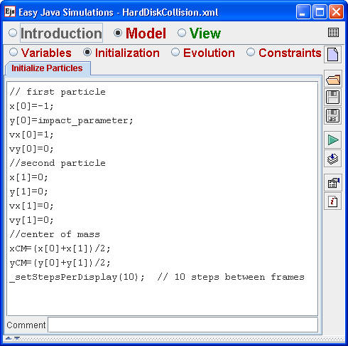
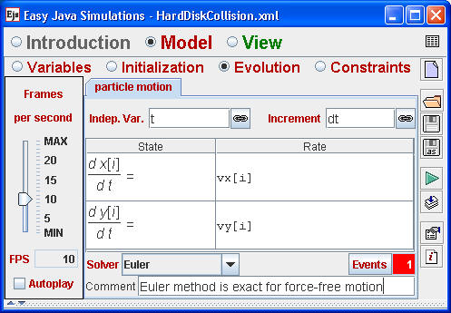

Ejs supports arrays and we have chosen to use this capability to model the position and velocity because arrays make it easy to generalize the model to an arbitrary number of particles. (See the the Hard Disk Gas model in the advanced modeling section.) The array of all x values is named x and the coordinates of the first and second particles are x[0] and x[1], respectively. Note how the x and y values are used to compute the center of mass (CM) coordinates in the model's initialization. The _setStepsPerDisplay method is predefined in Ejs. Its purpose is to perform multiple evolution steps during a single screen refresh cycle. Small time steps are needed because the evolution algorithm advances in discrete steps. Ejs will not detect an event if the system passes through an illegal state as it advances from one allowed state to another allowed state in a single step.

The Ejs differential equation editor automatically creates an equation for each array element. Because the model's particles travel with constant velocity between collisions, the Euler method is exact and we have chosen to use this simple ODE solver for our model.
Load the Collision model into Ejs and click the events button to examine how the Ejs event is triggered when the particles overlap. The physics of the hard disk collision is contained in the event's action.